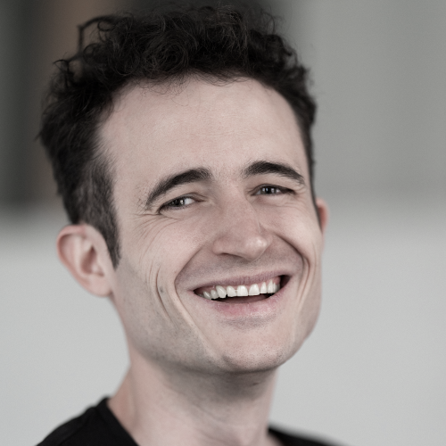

Johann Gay
est comédien. Il se forme de 2022 à 2025 à l’école Arts en Scène de Lyon auprès de Mario Gonzales, Philippe Dusigne,
Pauline Laidet, Maxime Mansion et Clara Simpson.
Guidé par le minimalisme et la langue poétique, il travaille aux côtés de l’écrivain Christian
Aguinaga à l’occasion de la lecture-spectacle Ces Choses qui nous parlent, en tournée depuis
2025 en médiathèques. Il met également en scène Jean-Jacques Montlahuc dans son solo
Debout dans la lumière présenté au théâtre de La Renaissance en novembre 2026.
Soucieux de sensibiliser les jeunes générations aux fléaux du dérèglement climatique et de la
discrimination, il travaille avec les compagnies Lunée l’Ôtre, Petites Planètes et Sac à dos
théâtre lors de spectacles comme La Déferle (Espace Tonkin, 2024) ; Pebbleboy (Acte 2,
2025) et D'ici Demain (Le Rize, 2026).